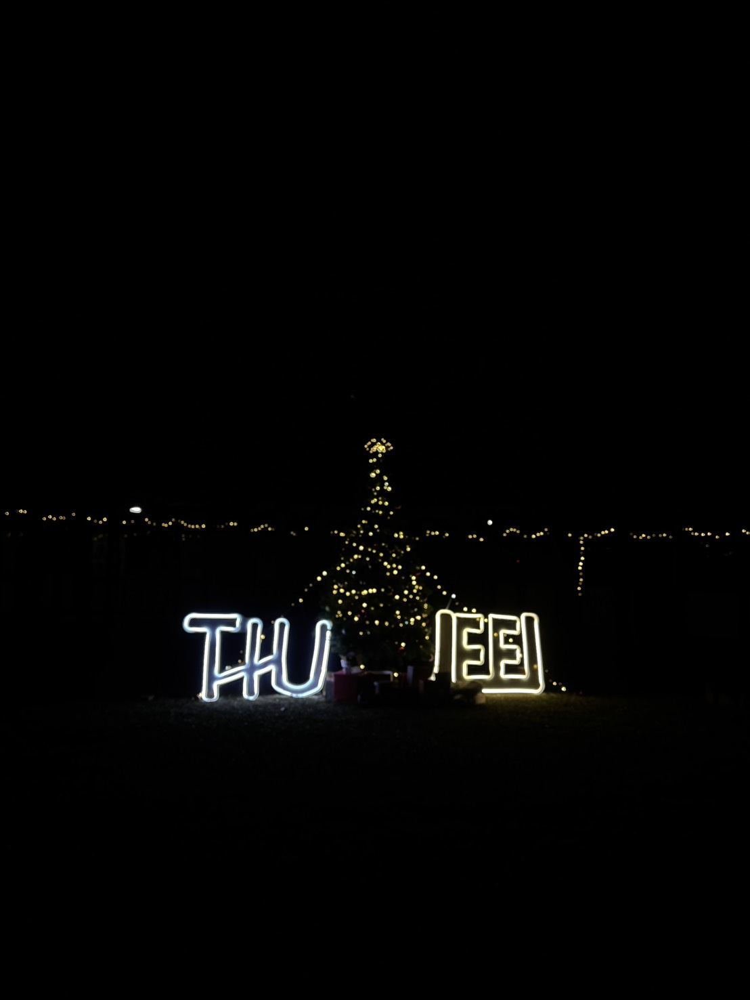
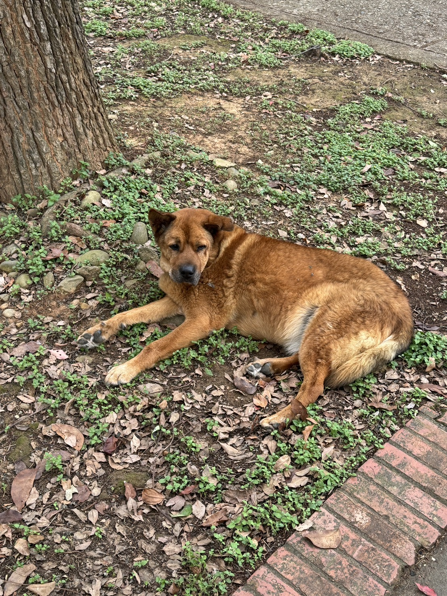
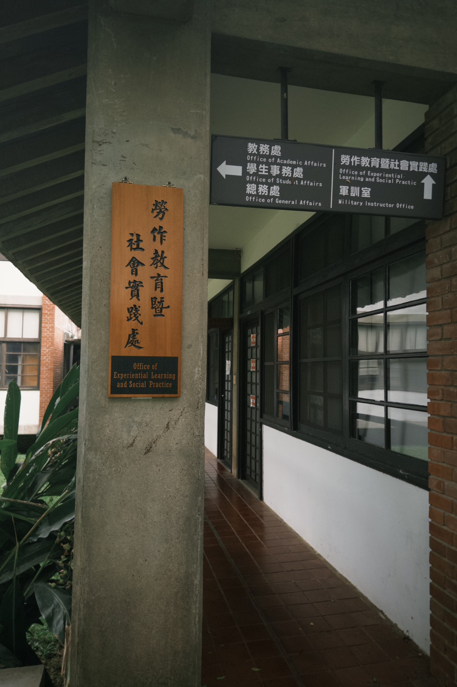

📍 台中東海漫遊地圖
路思義教堂
⏱️ 10:30

'26 11.15
MEMO
[ ☀️ 晴朗 ｜ 😍 浪漫 ]
雖然我不是基督教，但其實這裡天氣好的時候很漂亮！幸運的話還可以遇到有人在教堂辦婚禮。
工學院（聖誕節）
⏱️ 18:45

'26 11.15
MEMO
[ ✨ 閃耀 ｜ 🎄 溫馨 ]
因為東海是基督教學校，每年12月都會有漂亮的裝飾點亮學校每個角落，在我畢業的那年幸運的看到工學院的聖誕節點燈。
校友會館前
⏱️ 14:20

'26 11.15
MEMO
[ 🐶 想念 ｜ 🎓 畢業 ]
這是學校的校狗 aka 大學長，聽說他可能有20歲了，他叫冏哥，可能因為臉很冏哈哈。在我畢業的最後一年，也是冏哥在學校的最後一年，冏哥作為東海學生的共同回憶，在今年跟著我們一起畢業了...
勞作教育處
⏱️ 08:10

'26 11.15
MEMO
[ 🧹 辛酸 ｜ 😂 回憶 ]
東海最有名也是學生最討厭的勞作教育，跟北科大不一樣，東海的學生從大一進學校就必須修習勞作教育，也就是掃地，沒掃完不能畢業哈哈。